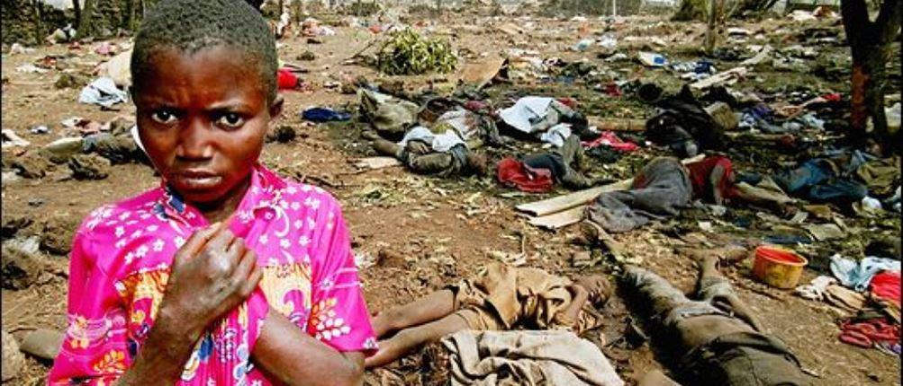
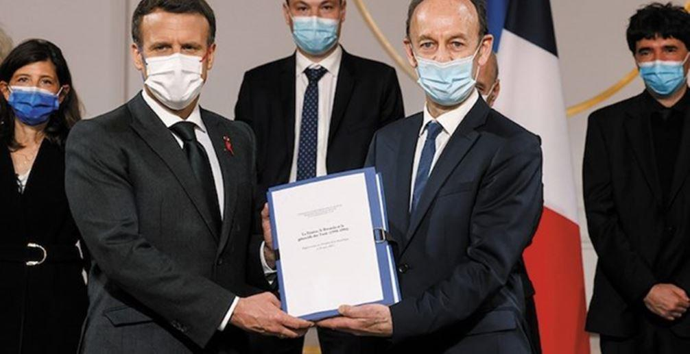

Agathe Habyarimana, veuve du président rwandais assassiné, a-t-elle contribué au génocide en attisant les haines, ou n'est-elle qu'une victime de plus dans la désinformation permanente à l'œuvre sur ce conflit où la France serait un commode coupable ?
« Chers auditeurs, bonjour. Soyez enragés. C’est à nous de nous débarrasser de cette sale race. Réjouissons-nous, les cafards sont exterminés et restons surtout unis contre la vermine ». Au lendemain de l’attentat du 7 avril 1994, qui a coûté la vie aux présidents rwandais et burundais, Radio Mille Collines continue de cracher son venin, infusé depuis plusieurs mois au sein de la population. La région des Grands Lacs plonge dans une guerre civile qui va faire un million de morts de part et d’autre des deux pays. Hutus et Tutsis, les deux principales ethnies des Grands lacs, vont se massacrer impitoyablement, chaque camp en rejetant la responsabilité sur l’autre. En France, au palais de l’Elysée, le président français prend la décision d’exfiltrer l’Akazu, le clan présidentiel, et Agathe Habyarimana, veuve du président assassiné, accusée d’être une des initiatrices du génocide d’après le rapport Vincent Duclert remis au gouvernement le 26 mars dernier. Sans jamais avoir été réellement inquiétée, la veuve noire vit toujours en France et nie toute responsabilité dans les massacres.
Depuis octobre 2009, Agathe Habyarimana fait l’objet d’un mandat d’arrêt international pour « génocide » et « crimes contre l’humanité ». Épouse du président rwandais Juvénal Habyarimana, elle réside toujours en France, dans l’Essonne, depuis l’attentat du 7 avril 1994 qui a coûté à la vie à son mari et au président du Burundi, Cyprien Ntaryamira. Tous deux venaient alors de signer un accord de paix à Arusha, en Tanzanie. À 78 ans, elle se défend des accusations et des soupçons qui pèsent sur elle depuis le déclenchement du génocide. Donné en main propre au président Emmanuel Macron, le rapport Vincent Duclert, chargé d’« analyser le rôle de la France » dans cette terrible tragédie, a remis en lumière l’Akazu (ou le Réseau Zéro), ce clan présidentiel exclusivement composés de Hutus du nord du Rwanda et de proches de la famille Habyarimana. Pour l’historien, le rôle d’Agathe Habyarimana dans le génocide n’est pourtant pas à ignorer.
« Dans ces pays-là, un génocide n’est pas trop important » aurait dit François Mitterrand. Entre l’Élysée et la famille Habyarimana, « une relation forte, personnelle et directe » qui s’est traduite par plusieurs rencontres entre les deux dirigeants au cours des deux septennats du président français. C’est en 1973 que Juvénal Habyarimana est arrivé au pouvoir, après avoir mis un terme à la présidence omnipotente du docteur Grégoire Kayibanda, le père de l’indépendance qui a chassé la monarchie tutsi de son trône. Pour la Belgique, l’ancien pays colonisateur, le coup d’État est bien accueilli car il évite un nouveau massacre ethnique en préparation.
Quant à la France, elle offre au Rwanda une place de choix dans le giron de la Françafrique, un système nébuleux qui permet à l’Hexagone de s’ingérer politiquement dans ses anciennes possessions africaines en toute discrétion et de s’assurer de facto des contrats juteux. Le pays prospère et, jusqu’en 1990, aucune tension entre Hutus et Tutsis n’est relevée. Il faut l’entrée en rébellion des exilés tutsis, réfugiés en Ouganda depuis quatre décennies, pour que les démons ethniques se réveillent. La France envoie immédiatement des hélicoptères stopper l’avancée des rebelles avant de se retirer. C’est à cette époque que se forme l’Akazu qui relaye des thèses extrémistes grâce à son quotidien Kangura (« Réveille-le ») dont on dit qu’il prend directement ses ordres de la femme du président Habyarimana elle-même. D’ailleurs, un quart de la presse rwandaise est aux ordres de l’Akazu dont les membres estiment que Juvénal Habyarimana fait preuve de mollesse envers ses opposants tutsis et les hutus modérés.
« L’objectif [du clan est] de saboter le processus de démocratisation » et il organise à cette fin, au moyen d’“escadrons de la mort”, des assassinats politiques et des massacres destinés à renforcer les haines ethniques. Ce Réseau Zéro, dont les « véritables cerveaux » semblent être, rapporte la DGSE, Agathe Habyarimana et son frère Protée Zigiranyirazo, dit « Monsieur Z » Comme le précise le rapport Vincent Duclert, l’Elysée ne pouvait pas ignorer cette radicalisation puisque l’attaché de défense à l’ambassade avait émis un document en ce sens. L’Akazu « paralyse l’action du chef de l’État et mine ses éventuelles velléités de transformation en profondeur. Parmi eux se distingue son épouse » n’hésite pas à écrire le colonel René Galini.
Difficile aussi de nier que François Mitterrand ait été au courant. « Elle a le diable au corps. Si elle le pouvait, elle continuerait à lancer des appels au massacre à partir des radios françaises » déclare-t-il en lisant un rapport secret défense qui soupçonne le clan d’avoir réduit au silence le président Habyarimana afin d’éviter qu’il ne partage le pouvoir avec les Hutus du sud. Dans le cadre de l’opération Turquoise, il ordonne son exfiltration deux jours après l’assassinat de son mari, « dans les premières rotations avec des ressortissants français […] » et accepte de l’accueillir dans l’Hexagone avec sa famille.
L’ambassade de France est rapidement fermée par la suite non sans avoir fait brûler une petite montagne de documents diplomatiques. La cellule de crise pour l’évacuation des ressortissants européens s’étonne de ce départ et fait parvenir au ministère une lettre qu’elle a reçue d’un père blanc évacué du Rwanda, le père Hazard. Celui-ci pointe du doigt la responsabilité d’Agathe Habyarimana, « une instigatrice de premier plan dans la formation et l’armement des milices populaires [Interahamwe – ndlr] qui ont ensanglanté le pays ».
« Son implication dans le génocide est difficile à prouver. Première dame d’une extrême discrétion, elle ne prenait jamais la parole en public et n’était pas au Rwanda pendant la majeure partie des massacres » note toutefois Jeune Afrique dans un article que l’hebdomadaire lui consacrait, il y a neuf ans. Dans une rare interview accordée au Figaro en 2007, la veuve noire dément toute participation directe ou indirecte au génocide. « Hypothèse sans fondement. Pourquoi ? Pour prendre le pouvoir ? Rendre mes enfants orphelins ? Me rendre veuve ? Je ne suis complice de personne ! » affirme-t-elle. « Je ne me suis occupée des affaires politiques, ni avant, ni pendant ni après les événements qui ont secoué notre pays. Que ceux qui affirment le contraire le prouvent ! J’ai tout simplement été épouse du chef de l’État. Depuis l’attaque du FPR [rébellion dirigée par l’actuel président Paul Kagamé] en 1990, on a sali la famille du président et inventé ce mouvement Akazu. Ce mot était inventé par nos détracteurs. Nous formions une famille comme les autres. Est-ce un crime ? Être chef d’État ou être son épouse n’exclut pas d’avoir une vie familiale normale, sans complots politiques » ajoute Agathe Habyarimana qui est désormais « sans papiers » depuis que la France a refusé de lui renouveler son permis de résidence. Elle a été convoquée en novembre 2020 par un juge d’instruction pour « complicité de génocide », afin d’être placée sous le statut de témoin assisté suite aux plaintes déposées en 2013 par l’association Survie, la Fédération internationale des ligues des droits de l’homme (FIDH) et son antenne française.
Illustration : Vincent Duclert, spécialiste de l’affaire Dreyfus, remet son rapport sur le génocide rwandais à Emmanuel Macron, expert en déconstruction. Un grand moment de vérité historique sans arrière-pensées.
Le Rwanda affirme avoir un dossier accablant la concernant mais la France refuse toujours de l’extrader sans que les preuves n’aient été avancées, en dépit du rapport Vincent Duclert. Un document long de mille pages qui n’a peut-être pas encore révélé toutes ses zones d’ombres sur l’implication de la famille Habyarimana dans le génocide rwandais et le rôle du gouvernement français.
Partager cette page